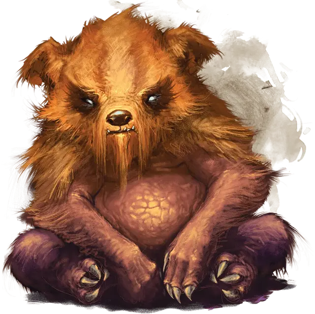

Зорбо
Zorbo
Маленький Монстр, без мировоззрения

Класс Доспеха 10 (природный доспех (см. особенность))
Хиты 27 (6к6 + 6)
Скорость 30 футов, лазая 30 футов
| мод | спас | ||
|---|---|---|---|
| СИЛ | 13 | +1 | +1 |
| ЛОВ | 11 | +0 | +0 |
| ТЕЛ | 13 | +1 | +1 |
| мод | спас | ||
|---|---|---|---|
| ИНТ | 3 | −4 | −4 |
| МДР | 12 | +1 | +1 |
| ХАР | 7 | −2 | −2 |
Навыки Атлетика +3
Чувства пассивное Восприятие 11
Опасность 1/2 (100 опыта)
Бонус мастерства +2
Особенности
Сопротивление магии. . Зорбо получает преимущество на спасброски против заклинаний и прочих магических эффектов.
Природный доспех. . Зорбо волшебным образом поглощает природную силу своего окружения, корректируя свой класс брони, основываясь на материале, на котором он стоит или взбирается: КД 15 для дерева или кости, КД 17 для земли или камня или КД 19 для металла. Если зорбо не контактирует ни с одним из этих веществ, его КД составляет 10.
Действия
Разрушительные когти. . Рукопашная атака оружием: +3 к попаданию, досягаемость 5 футов, одна цель. Попадание: 8 (2к6+ 1) рубящего урона, и если цель – это существо в доспехах, носит щит или обладающее волшебным предметом, улучшающим его КД, оно должно пройти спасбросок Ловкости Сл11. В случае неудачного спасброска один из таких предметов, которым владеет или держит в руках существо (по выбору цели), ухудшается магическим образом, получая постоянный и кумулятивный штраф -1 к КД, а зорбо получает +1 бонус к КД до начала его следующий хода. Броня, КД которой уменьшился до 10, щит или волшебный предмет, бонус КД, который падает до 0, разрушается.
Описание
Зорбо – свирепые, всеядные, похожие по размеру и внешнему виду на коалу. Живя в деревьях и пещерах, у него длинные когти, суровый нрав и любовь к гуманоидной плоти. Зорбо изменяет свой природный доспех, чтобы соответствовать своему окружению, и он может ослаблять и уничтожить доспехи, щиты и защитные магические предметы своими острыми когтями.